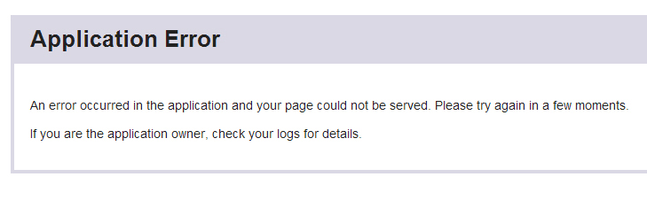
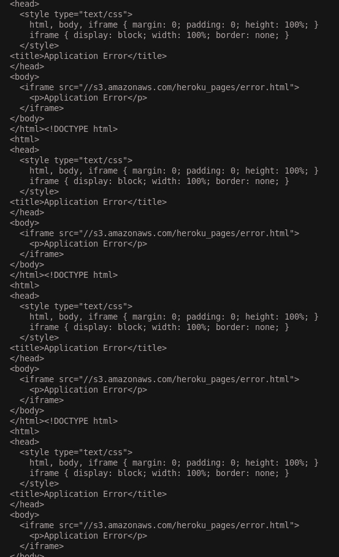
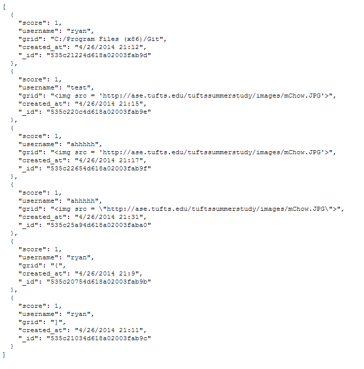

The goal of this project was to create a web application that used a database to store 2048 data. The user would be able to post game data related to their username, and get data related to their specific username
To test the security of the application, I used curl, wrote a shell script, and modified a URI. Initial black box testing was done by using curl to insert malicious content into the database of the application. Initially, I was rejected by the server for not having enough information. Upon looking at the source code, I modified my curl command as follows:
I ran the following script:
I tried accessing the submit API the following way:
By allowing cross origin resource sharing, and not checking inputs thoroughly, I was able to use a command called curl to inject any html I wanted into the application. When the application loaded the data I injected into the database, it ran my script, replacing the website with a paragraph saying HAHAHA
As a result of my data flood to the database, the entire application was shut down. The application could not handle the frequency at which I was posting. Eventually the memory allowance of the database would have been reached and the application would have crashed because of that, but it crashed early just due to a bombardment of post requests.
The query I used in the URI allowed access to the information of all users. The user should just be able to put their own name in and get their data. I asked for all user information for any user but me. As a result, I obtained information on all the users.
Input was not sanitized. Input was allowed from any location
app.js at around line 105
High. This presents a major security flaw. Because cross origin resource sharing is allowing any location to make post requests, anyone can insert whatever code they want into the user's website. This essentially makes it so that a person can just replace your website with their own website
The current program lets anyone send a post request and also does not check the input to make sure that it is just text. As a result someone can insert a combination of HTML and JavaScript using a simple curl command that can turn the website into whatever the attacker desires
Original
After insertion
Create an API key system that requires email confirmation in order to make it so that only people with a key can make posts to the database. This will prevent everyone from using curl, and lets you identify the users responsible if something does go wrong.
To sanitize input, escape special characters in order for the program to treat all input as text. To do this you must write a script that looks for special characters and replaces them with the encoding for that character rather than the character itself. This will still render the characters the way they were inputted, but not have the effect of HTML injection. If you want to use another person's input sanitation one can be found here made by Google.
Can flood database and crash it
no location
High. Yeah this is bad, you can just crash the website from inputting too much too fast, or by inputting until the database runs out of storage space and crashes
The application lets someone post data, which is stored in the database. There is no check to see if the post is legitimate, or if the server is going over its limit, so the application just crashes when too many post requests are made, or the data limit is reached, instead of ignoring input, or replacing old input.
Website
My shell after the crash
Keep track of post times by username. If posts are being made too frequently, block the post. However, the person might be posting under multiple usernames. To prevent an attack like this, come up with, and update normal posting statistics for your website. Then write a program that keeps track of posting frequency. If the program finds that the posting frequency goes a large margin above the average, then prevent data from being sent to the server, or delete it immediately from the server once it is there. You can keep track of a list of usernames during the high frequency posting time, and block their entries specifically. To prevent data from filling up the database, remove all data from malicious users after a brief time period (let real users caught in the crossfire of the blacklist email an admin within a time window to get off the blacklist before their information is deleted).
can manipulate query to get the data of all users
app.js lines 71 - 83
Medium. Because of the nature of the data stored by the database, this issue is not too severe, but allowing access to the information in your entire database is never a good thing.
The query used asked the database for all user information where the name was not equal to the name given. By using a garbage name, any user can grab the data of any other user. Also the specifications in the original assignment were to output an empty json file by default, not the json of the entire database.
Malicious URI
All Database Data in the "scores" collection
Sanitize queries. Write a function to ensure that the user query can only be the value of a specific username. Also return empty json by default, not the json of the whole database.
Security issues are present in 2048-gamecenter. These issues allow attackers access to client information, let attackers completely change and manipulate the website, and let attackers bring down the website altogether. These issues can be solved if the owner sanitizes inputs and queries and monitors data being passed into the database, as well as frequency of database access. If the owner wants to, he could create an API key system that requires key access in order to use his API.